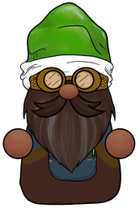

Scrubgnome
Away from Home
On iPhone, choosing Browse (Files) hands Twig the original. The Photo Library option may give him a re-compressed copy.
Level 1 · metadata scrub (lossless, no re-encode) + hidden-tone check. Runs entirely in your browser; this page is locked from sending data anywhere. Audio cleaning lives in desktop Scrubgnome.
Generated with AI